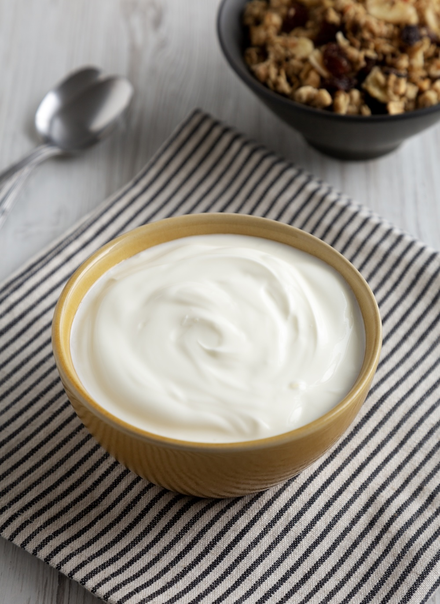
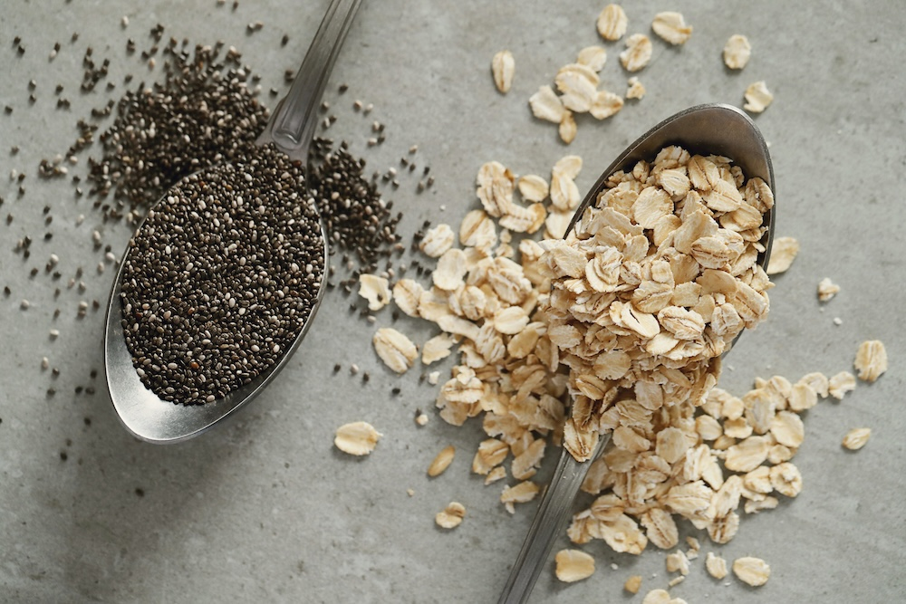

How you start your morning sets the tone for the rest of your day. A healthy breakfast doesn't have to be complicated—yogurt and fruits offer a simple, satisfying combination that delivers protein, probiotics, and natural sweetness. Here's how to make the most of this classic pairing.
Why Yogurt and Fruits Work So Well Together
Yogurt provides protein and probiotics that support digestion and keep you full. Fruits add fiber, vitamins, and natural sugars that give you energy without the crash. Together, they create a balanced breakfast that stabilizes blood sugar and fuels your body for the day ahead.

Choose the Right Yogurt
Plain Greek yogurt is a standout choice—it's higher in protein and lower in added sugar than many flavored options. Look for varieties with live cultures for probiotic benefits. If you prefer a creamier texture, whole-milk yogurt works beautifully. For a dairy-free option, coconut or almond-based yogurts pair well with fruits too.
Best Fruits to Pair with Yogurt
Almost any fruit works, but some combinations shine:
- Berries (strawberries, blueberries, raspberries)—packed with antioxidants
- Banana—adds creaminess and potassium
- Peaches or mango—sweet and refreshing
- Apple or pear—add a crunch when diced fresh
- Pomegranate seeds—burst of tart sweetness
Mix and match based on what's in season for the freshest flavor.
Simple Add-Ins for Extra Nutrition
Elevate your yogurt bowl with a sprinkle of nuts, seeds, or whole grains:
- Chia seeds or flaxseed—omega-3s and fiber
- Granola or oats—crunch and sustained energy
- Almonds or walnuts—healthy fats and protein
- Honey or maple syrup—a touch of sweetness if needed
Quick Breakfast Ideas
Layer Greek yogurt with mixed berries and a drizzle of honey. Blend yogurt with banana and frozen mango for a quick smoothie bowl. Or keep it classic—a generous scoop of yogurt topped with sliced peaches and a handful of granola. No matter which combination you choose, you're giving your body a nourishing start to the day.

A healthy breakfast with yogurt and fruits is one of the simplest ways to support your wellness. It's quick to assemble, endlessly customizable, and delivers the nutrients your body needs to thrive. Start with one combination you love and build from there.